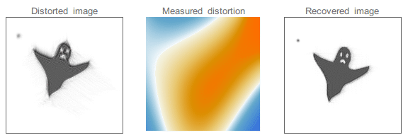

Jitter is the rapid, irregular variation in a telescope's pointing direction — a stochastic angular wobble of the line of sight around its intended target on timescales of milliseconds to seconds. In ground-based astronomy, jitter arises primarily from atmospheric turbulence and mechanical vibrations; in space telescopes, from reaction wheels, cryo-cooler mechanisms, and other onboard sources. Jitter broadens the point spread function (PSF), degrading angular resolution and photometric precision, and is measured in arcseconds on the ground or milliarcseconds in space. In stellar spectroscopy, 'radial velocity jitter' refers to a distinct but related concept: astrophysical noise from stellar surface activity that contaminates planet-detection signals.

Jacopo Bertolotti / Wikimedia Commons (CC0 1.0)
{kind=link}
Causes
At ground-based observatories, the dominant cause of jitter is Earth's turbulent atmosphere. Temperature variations in atmospheric layers create refractive-index fluctuations that deflect and distort incoming wavefronts, producing rapid image motion with a characteristic timescale set by the atmospheric coherence time τ0, typically 10–30 ms under good seeing conditions. On large telescopes, this image motion exceeds the diffraction limit by orders of magnitude without correction. Mechanical vibrations from building fans, wind loading, drive motors, mirror support actuators, and instrument cooling systems all inject additional vibrational energy into the telescope structure. On space telescopes, reaction wheel imbalances, cryo-cooler mechanisms, and shutter actuators are the dominant jitter sources, typically producing line-of-sight jitter in the range 0.1–10 milliarcseconds for well-engineered systems. Telescope drives introduce periodic and random tracking errors as a further ground-based source; residual uncorrected fast motion on sub-guiding timescales constitutes another component of the overall jitter budget.
Impact on Image Quality
Jitter directly broadens the PSF. When the jitter amplitude exceeds the diffraction limit (λ/D for aperture D), angular resolution is jitter-limited rather than diffraction-limited. For photometry, PSF broadening reduces peak signal-to-noise on point sources and increases background contribution within any aperture. For astrometry, jitter randomises centroid estimates. For spectroscopy, if the PSF wanders across a narrow slit, effective resolution and throughput fluctuate. Jitter is characterised as a root-mean-square (RMS) angular displacement; a standard metric for space telescopes is the Relative Pointing Error (RPE), the instantaneous deviation relative to the mean over a short reference window.
Mitigation
At ground-based observatories, image-motion correction is the first stage of every adaptive optics system. A fast steering mirror tilts at hundreds to thousands of hertz to null the measured image motion, removing the dominant low-order jitter component in a closed feedback loop using a guide star. Vibration sources are further isolated mechanically — reaction wheels mounted on vibration isolators, cryo-coolers with passive damping stages — and active control systems use accelerometers to cancel residual structural vibrations. Space telescopes use Fine Guidance Sensors (FGS) that lock onto guide stars and send corrections to the attitude control system. JWST's FGS operates at approximately 64 Hz, achieving a line-of-sight jitter of approximately 1 milliarcsecond (1σ per axis), well within its requirement of less than 3.7 milliarcseconds. The Hubble Space Telescope achieves 2–5 milliarcsecond RMS tracking accuracy per orbit.
Radial Velocity Jitter
In a distinct usage, astronomers describe 'radial velocity jitter' as astrophysical noise in Doppler planet-search data. Stellar surface phenomena — rotating starspots, solar-like oscillations, granulation, and supergranulation — cause apparent Doppler shifts not caused by planetary companions. The principal mechanisms are the flux contrast of dark starspots crossing the visible hemisphere, which distorts spectral line profiles, and the suppression of convective blueshift in active regions. Typical RV jitter amplitudes range from approximately 0.5–1 m/s for a quiet solar-type star averaged over one hour, to 5–10 m/s near an active-region maximum. Mitigation strategies include simultaneous photometric monitoring, activity indicator filtering, wavelength-differential analysis (since spot-induced jitter is wavelength-dependent while planetary Doppler shifts are not), and Gaussian Process regression to model the correlated jitter noise alongside the orbital signal.